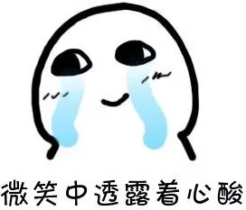
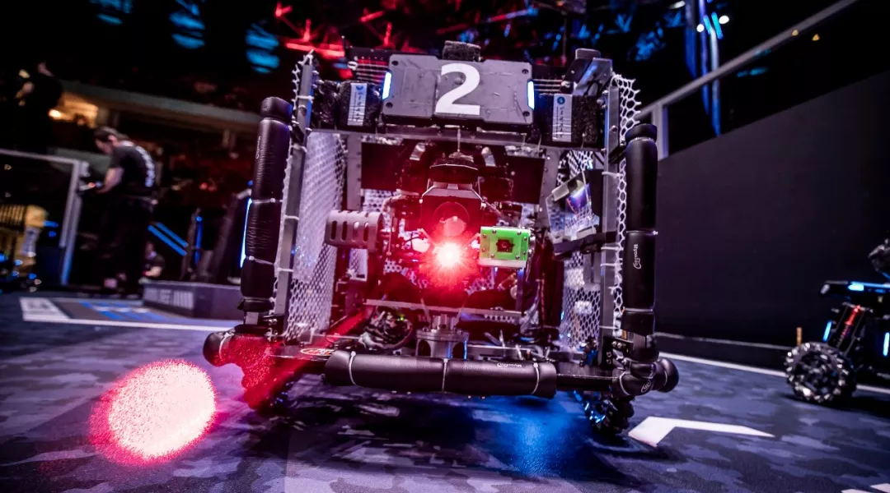
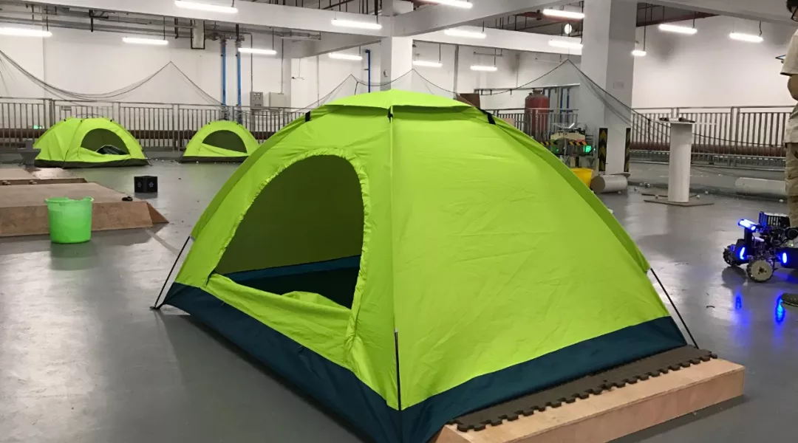
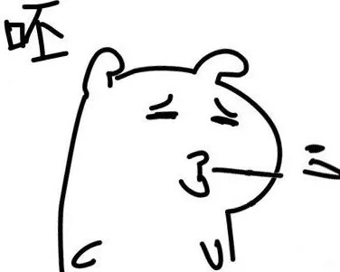
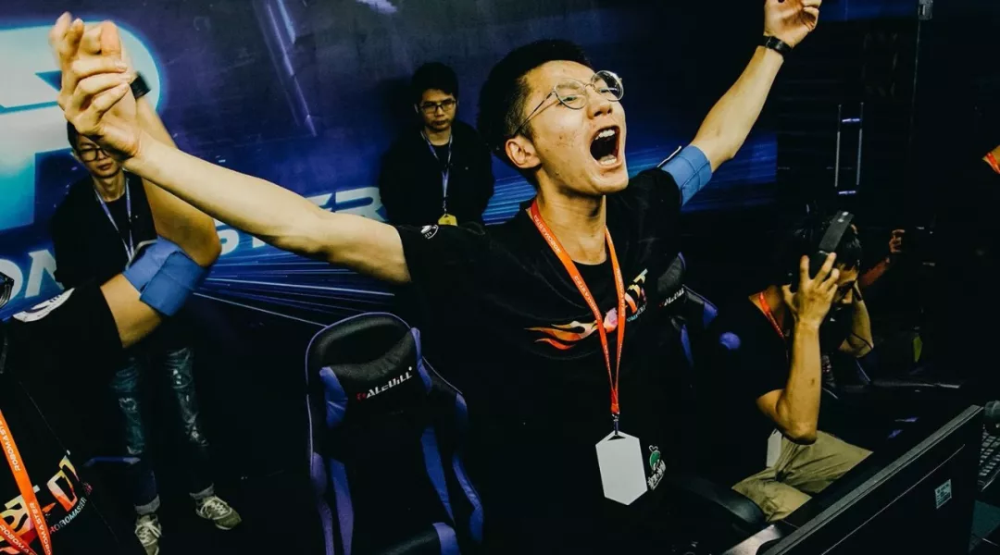
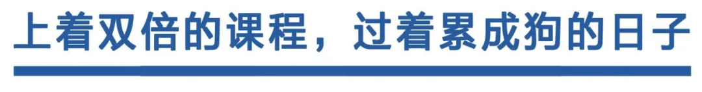
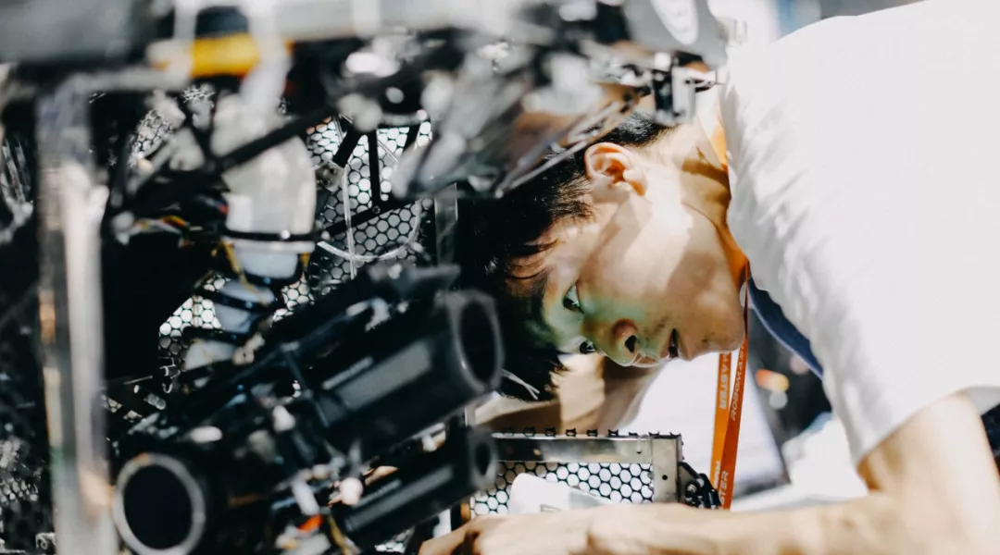
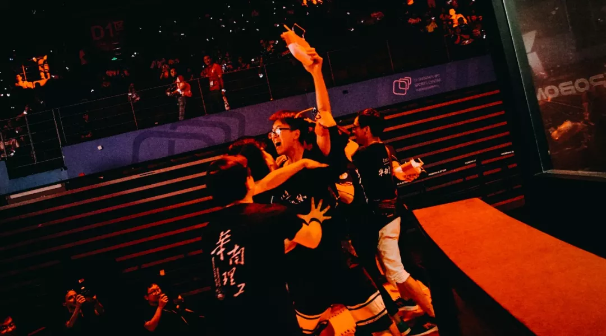

“那些闯进32强的机器人队伍，一定很有钱吧？”
“有些队伍，天生是强队，天生就会赢。”
“那些闯进32强的机器人队伍，一定很有钱吧？”
“他们学校支持呀，赢了就能保研。”
八卦在哪都有，没想到，在逻辑缜密、思维理性的理工生聚集地——RoboMaster比赛也没能逃过。
小R发现，大家开始猜测起队伍的备赛环境：强队是不是条件优渥，自带光环？这是个“豪门”比赛，能晋级的都是壕队伍……
快醒醒，做啥梦呢！小R决定揭开他们的伤口，告诉大家：他们是假的光环，真的“惨”。
什么是真的“穷”？就有一些大学新队员的入门课是：捡螺栓螺母。
比完赛后，指导老师带着队员在实验室满地找配件，甚至会花几天来做这件事。
这还没完，第二天，有人在楼下垃圾桶喜提一个六角铜柱，他们立马组织所有人，把楼下几个大垃圾桶重新翻了个遍，又捡回几个配件，开心了好几天。

现在，楼下的垃圾桶莫名消失了，他们很是想念。
他们靠什么“活”下来？靠不想“死”的决心。
似乎资金是绕不过的坎，因为做机器人本身就很“烧钱”，咱们以前聊过：“为什么要和理工男谈恋爱？”因为他们富！可！敌！国！
东北大学在2016年分区赛，想赶制一台新的机器人，但发现缺少框架材料。
第二天就要上场了，队员愁得不行，队长灵光一闪，把酒店三层高的木质鞋架给锯了，和机器人融为一体。
退房时，酒店老板目瞪狗呆。不过，他们没有被老板打一顿，还和老板谈人生、聊梦想，成为了朋友。
这大概是东北人的天生技能吧。
你说他们是强队，经费超过十万，那你一定要认识一下北京理工大学珠海学院。
他们第一年靠四万块打进总决赛。只要是不受力的部件，就用3D打印，因为便宜。看吧，只要愿意，即使资金很少，一样可以做好，
其实，我不害怕队伍缺少经费，只怕他们用此作为借口，怨上天不公。

以前我以为，队员都是吹着空调，用着高级电动螺丝刀，在整洁的实验室里敲代码。
实地考察后发现，我输了。
电子科技大学，一年四季住在实验室，和老鼠和平共处——队员不杀生，老鼠不啃电线。
晚上睡觉，旁边是雕刻机嗡嗡声的轰鸣声。
不过，这至少还有床，华南理工大学找了个地下室，撑起几顶帐篷，就称作备场了。
连续三年，24小时全天守在地下室，成了学生停车取车的观光打卡点。
操作手更是以地下室为家。在训练期间，不管是几点，只要电池充满电，就必须爬起来训练操作，直到电池跑没电，才能获得片刻小睡。
东北大学就更吓人了，2016年的备赛是在室外进行的，最冷的时候有零下20℃。
我能想到最浪漫的事，就是和你在艳阳下喂蚊子，冬天在大雪里变成冰雕。
对他们来说，在大雪天里搞过机，才足以谈人生。

他们技术好是必然，赢是理所应当？pēi，这是RoboMaster界最大的笑话。

今年的亚军东北大学，在分区赛却没进四强，拿了他们史上最差成绩。
因为超级电容（可以简单理解成：让机器人跑得更快的技术）做砸了，机器人罢工不动。
回学校后，他们彻底推翻旧方案，重头做起。队员为了攻克一个技术点，废寝忘食，做梦都在调机器人，连女朋友的电话都不接，于是最后分手了......
好在他们总决赛打出了史上最好成绩。希望那位队员可以拿着奖杯，获得女朋友的原谅。
强大是天生的吗？不是，但想赢是天生的。
中国矿业大学的步兵小陀螺很厉害，但也不是凭空而生的。他们在没有基础的情况下，自己研发电调。
当时，全队都反对这个方案；“一群本科生，做啥电调？”
队长顶着压力，花了3个月带领几名骨干完成研发，最终用在步兵上，成了赛场最炫的必杀技。
曾经以为，好的技术是野生在他们脑子里的，最后发现，都是他们辛苦播种的。
最“洁癖”的，大概是日本的福冈联合大学。每次比完赛后，他们都会拿出小刷子，仔细地一圈圈地清理轮子。
Amazing！刷轮子！这也太精致了吧！这种精益求精的精神，让他们第一次参赛就闯进了16强。
所以呀，不要拿外界条件作为咸鱼的借口。即使有同样的环境，你能保证付出同样的努力吗？


学业和兴趣如何平衡，是永恒的话题。
哈尔滨工业大学，一个重视学业的老牌高校，有队员上着双学位的课，同时兼顾比赛。结果怎么样？保上研了……
这还不是特例，因为优秀的全队基本都保上研了。他们的时间表是这样的：
7:30 起床
8:00-12:00 上课
12:30-13:45 午饭、实验室
13:45-17:45 上课
17:45-1:00 晚饭、实验室
1:00-3:00 写作业
早上7:30起床，凌晨3点睡觉。
在最忙的时候，有队员的女朋友从外地飞来，他还在实验室焊板子。结局惊人地相似：分手了。
千万别误会，这不是“大型比惨大会”，因为比他们更艰苦，更努力的大有人在。

最后
有队员说，在他刚入队时，学长问他：“你想要怎样的大学生活？”
他想了很久。是想要拿很多很多奖状吗？是想要加很多很多分吗？是想要领遍所有的奖学金吗？
归根到底，并不是的。
生而为人，好不容易来到这个世上，他想做一点不一样的事。在宇宙看来，这件事是会消逝的星点，但在自己看来，这是闪耀一生的永恒，敌过宇宙。
也许，这就是为什么比赛很难，依然有人身披钢甲战斗在赛场上。
他们不是真的“惨”，而是在享受不顾一切的自己。
在多年后回想起过往，一定会感叹：“那时候的自己，是真的酷。”

相关阅读
看更多机器人和赛事信息
关注 RoboMaster